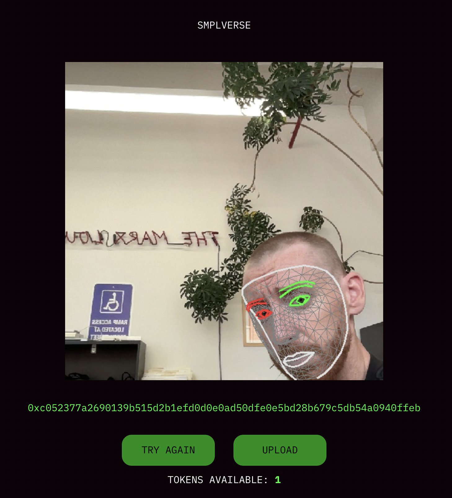

◟◝
SMPLverse
SMPLverse, 2022
Press:
Gilbert Again (James Langdon),
JPEG2000,
Paradigm Trilogy,
worthlessjpeg.eth, Zora Zine
Support: Friends With Benefits
SMPLverse
SMPLverse, 2022
Press:
Gilbert Again (James Langdon),
JPEG2000,
Paradigm Trilogy,
worthlessjpeg.eth, Zora Zine
Support: Friends With Benefits

SMPLverse NFTs use facial recognition to match users to images synthesized by Microsoft to train face tracking algorithms for its mixed reality headsets. Like many NFT projects, Microsoft's dataset was procedurally-generated from a library of digital assets: from a template 3D face model, 100,000 images were rendered with random identities, expressions, textures, hair, clothing, and environments.
Synthetic data is increasingly used to train computer vision algorithms because it is diverse and perfectly labeled by design. In mixed reality headsets, these algorithms communicate the slightest expressions of bodily reality to virtual images. The synthetic data on which these algorithms are trained are the medium of this communication, the skins we wear on the metaverse's computational layer. Though the figures in Microsoft's dataset resemble the avatars that populate the metaverse's surface, they function as avatars for the infrastructure along which all other avatars travel.
If the fundamental problem animating NFT projects consists of investing images with new identities and realities, SMPLverse elaborates the ultimate indifference of our images—corporeal and otherwise—to those identifications.

